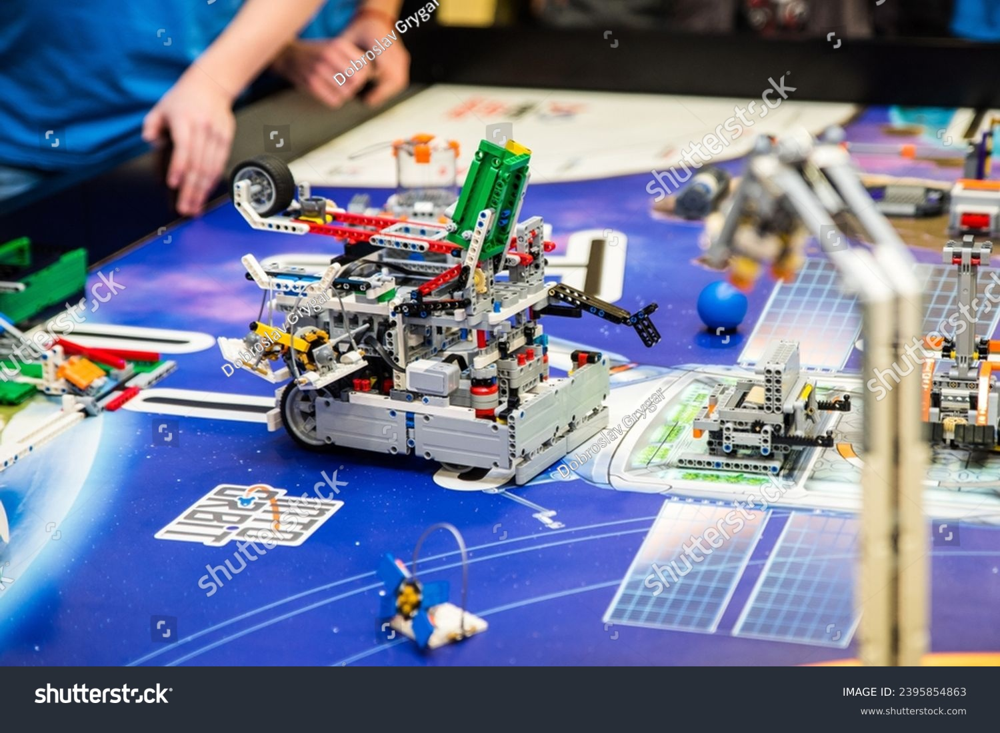

A criatividade que começa com blocos de LEGO pode, literalmente, alcançar as estrelas. A First Lego League (FLL) não é apenas uma competição de robótica — é uma experiência que desperta nos jovens o espírito inovador que move o mundo. Quando crianças e adolescentes constroem robôs, desenvolvem soluções para problemas reais e trabalham em equipe, eles estão desenvolvendo as mesmas habilidades que visionários usam para transformar o planeta — ou até sair dele.

A First Lego League (FLL) é uma competição internacional que combina ciência, tecnologia, engenharia e matemática (STEM) com robótica e trabalho em equipe. Criada para jovens entre 9 e 16 anos, a FLL desafia os participantes a resolverem problemas reais do mundo por meio da construção e programação de robôs usando peças Lego Mindstorms. Cada ano, a competição apresenta um tema específico ligado a desafios sociais, ambientais ou tecnológicos atuais, incentivando os times a pesquisar, inovar e apresentar soluções criativas. Além da parte técnica, a FLL valoriza competências como cooperação, comunicação e ética, promovendo um ambiente educativo e inspirador. A experiência vai além da competição, preparando os jovens para o futuro, estimulando o pensamento crítico, a criatividade e o gosto por carreiras nas áreas de ciência e engenharia. A FLL é reconhecida mundialmente por seu impacto positivo na educação e na formação de cidadãos conscientes e preparados para os desafios do século XXI.

A First Lego League (FLL) surgiu em 1998, criada pela LEGO Education em parceria com a organização americana FIRST, fundada por Dean Kamen . Desde então, a FLL cresceu para mais de 100 países, envolvendo milhares de equipes ao redor do mundo. Uma curiosidade interessante é que os robôs usados na competição são montados com peças LEGO, mas são programados para realizar missões em tabuleiros específicos, que mudam todo ano, baseados no tema do desafio. Cada temporada tem um nome diferente, como “City Shaper” ou “Hydro Dynamics”, e os desafios abordam problemas reais como preservação da água, mobilidade urbana ou reciclagem. Além disso, as equipes devem desenvolver um projeto de inovação para solucionar um problema relacionado ao tema, mostrando que o objetivo da FLL vai muito além da robótica, focando em pensamento crítico e impacto social.
A First Lego League também valoriza muito os “Core Values” — valores fundamentais que orientam a experiência dos participantes. Entre eles estão “diversão”, “inclusão”, “respeito” e “curiosidade”. Um fato curioso é que, ao contrário de muitas competições que focam apenas em vencer, a FLL destaca que “vencer é secundário” e que o principal é aprender, colaborar e inovar. Por isso, os juízes também observam como os times trabalham juntos e como enfrentam os desafios de forma ética. Outro detalhe legal é que a competição promove a inclusão digital e científica, muitas vezes envolvendo jovens de diferentes origens sociais e culturais, o que ajuda a democratizar o acesso à educação tecnológica e despertar novos talentos em STEM. Além disso, vários ex-participantes da FLL se tornam engenheiros, cientistas e inventores, mostrando o impacto da competição no futuro profissional.